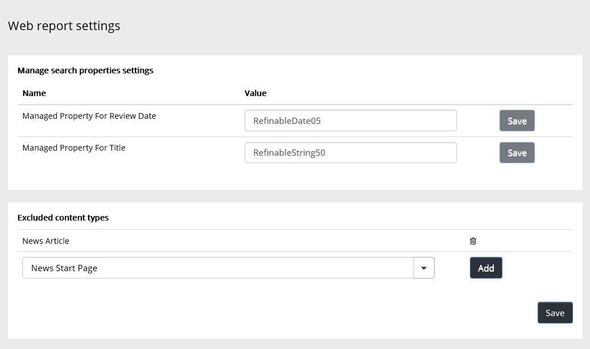

Using the Web Report Settings you can manage search properties settings and exclude some page types from the Web Report, page types that you don't want in the report for this Site Collection.

To add a page type to be excluded, find it in the list and click "Add". Note that this is Site Collection scoped setting.
To remove a page type from the excluded list, just click the dust-bin.